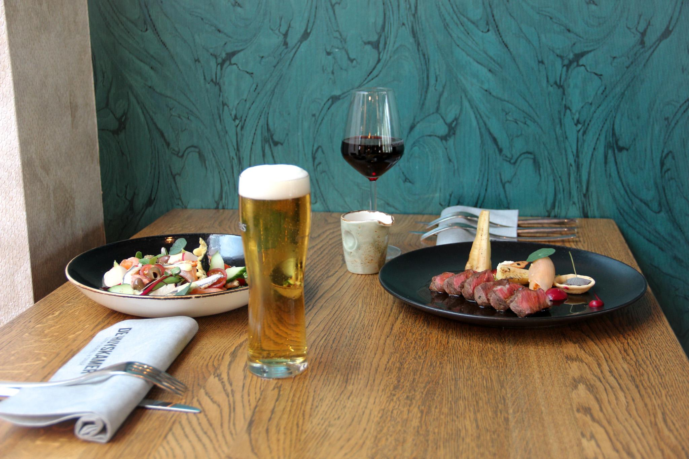
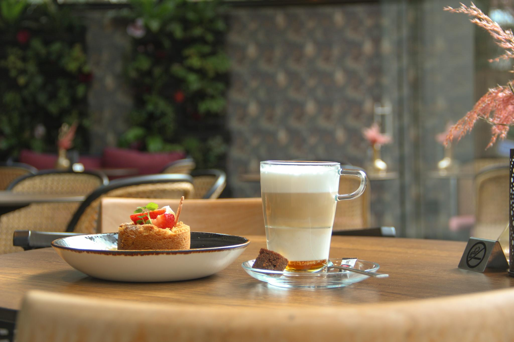
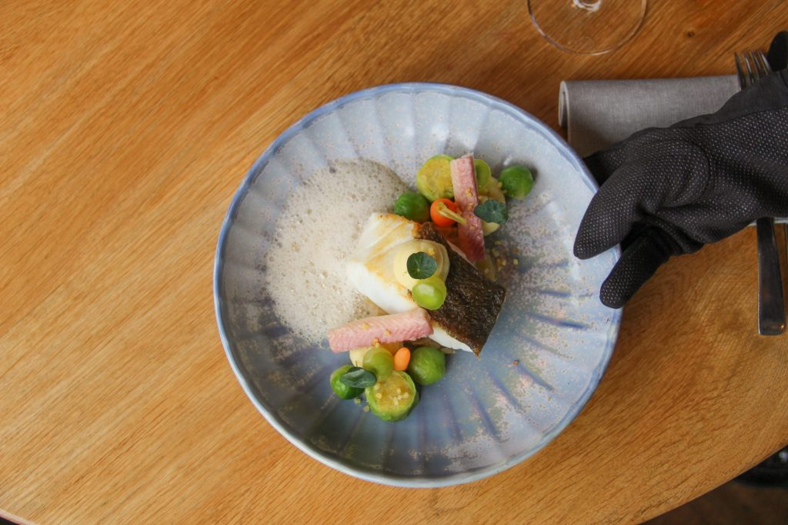
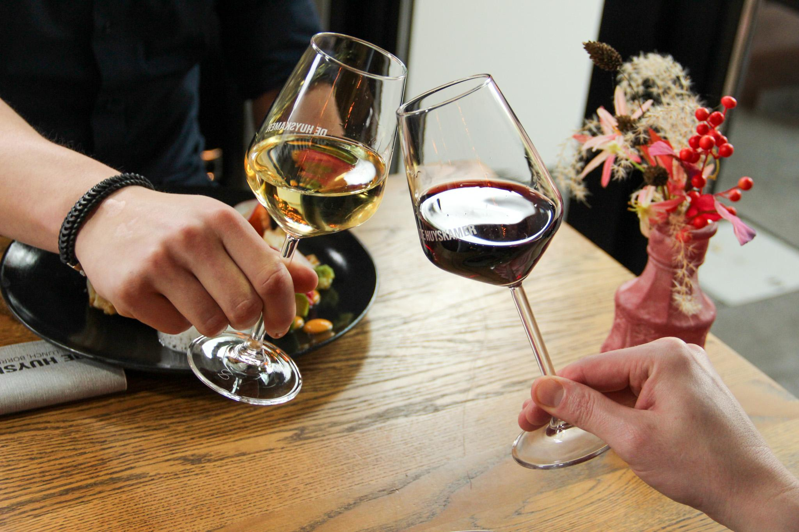

De HuyskamerHeerlijk binnen tafelen, bij onze open keuken.
Bourgondisch & gezellig, in het hart van Gilze
Alsof je bij vrienden eet, maar dan nét iets lekkerder. Voor koffie, lunch, borrel of diner, binnen, op het terras of in de verwarmde Tuynkamer.
In het hart van Gilze vind je De Huyskamer, waar gezelligheid, goed eten en een huiselijk gevoel samenkomen.
Met verse, lokale ingrediënten en veel aandacht bereiden wij gerechten waar je van geniet. In onze Huyskamer ligt de focus op gezelligheid en een optimale gastbeleving: persoonlijke aandacht vanuit de bediening vinden we net zo belangrijk als de kwaliteit van de gerechten uit onze keuken. Bij ons geniet je dagelijks van een kop koffie, een heerlijke lunch, een borrel met vrienden of een bourgondisch diner.
Elk bord is zorgvuldig samengesteld, met een mooie mix van smaken, zodat je van begin tot eind geniet.
Zeven dagen per week welkom voor lunch, borrel of diner. Reserveer je een tafel buiten? Dan zetten we binnen ook een plek voor je klaar, mocht het weer omslaan.

De HuyskamerHeerlijk binnen tafelen, bij onze open keuken.
Overdekt en verwarmd, met open zicht op onze groene achtertuin. Ook af te huren.
Tot 60 personen De Spreekkamer
De Spreekkamer
Private dining in besloten sfeer: met relaties, collega's of familie.
Tot 14 personen
Voortuyn & achtertuynHet terras in de voortuyn of de achtertuyn. Bestellen kan ook via de QR-code op tafel.
Meer over de Tuynkamer en het terrasVan een broodje bij de lunch tot vijf gangen bij het diner, en van meer dan 25 bieren tot een Huyskamer gin & tonic.
Dagelijks geserveerd van 11.00 tot 17.00 uur.
Meerprijs glutenvrij brood + 2,00. Tip: vul je lunch aan met een klein kopje huysgemaakte soep, 4,50.
Laat je in een aantal gangen verrassen door een culinair verrassingsmenu. Te bestellen tot 15.00 uur.
Laat je in een aantal gangen verrassen door de creatieve gerechten van onze keukenbrigade: drie gangen 47,50 · vier gangen 57,50 · vijf gangen 67,50.
Dieetwensen of allergieën? Geef het aan ons door. Alle hoofdgerechten worden geserveerd met huysgemaakte frieten. Extra portie frieten 4,50. Wij serveren geen kraanwater.
Voor kinderen hebben we altijd poffertjes en verse frieten met een frikandel, kroket of kipchunks in huys. Ook een klein soepje of een kleine salade kan. Voor de echte avonturiers maken we graag een kinderportie van onze à la carte kaart.
Onze borrelkaart is een selectie van de beste producten uit de regio. Onze worsten laten we speciaal maken bij Kwaliteitsslagerij Marcel Pijnenburg, de kazen komen van Fromagerie Guillaume uit Berkel-Enschot. Proef ook eens onze Leffe stoofvlees bitterballen, of probeer de 1 meter borrelplank.
Een proeverij in een aantal gangen van heerlijke theesoorten, wijnen of bieren, met verrassende amuses, hartige hapjes en warme lekkernijen.
24,50 p.p. Onbeperkt theesoorten gedurende de hele zit; desgewenst ook koffie. Te boeken vanaf 8 personen.
Vegetarische of vegan hapjes mogelijk in overleg. Cappuccino, verse munt- of gemberthee en andere dranken op nacalculatie.
35,00 p.p. Drie glazen wijn of bier per persoon, per gang gekozen uit onze topwijnen of bieren. Vanaf 2 personen, tot uiterlijk 17.00 uur, minimaal een dag van tevoren reserveren.
Vegetarische of vegan hapjes mogelijk in overleg.
In onze wijnkelder ligt een kleine voorraad prachtige wijnen voor de échte liefhebber. Deze zijn alleen per fles te bestellen en enorm bijzonder van smaak. Vraag ernaar bij de bediening.
Onze cocktailkaart is een selectie van de beste producten uit de regio. We werken met alléén de beste gins, en laten ze zelfs speciaal voor ons maken.
Zoals op de drankenkaart
Onder voorbehoud van prijswijzigingen.
Alle prijzen in euro's, onder voorbehoud van prijswijzigingen. Dieetwensen of allergieën? Laat het ons weten.

Geniet van onze gerechten gewoon thuis. Bestel online via Hebbes en haal je bestelling op, of laat het bij je bezorgen. Zo proef je De Huyskamer waar en wanneer jij wilt.
Bezorgen en afhalen via Hebbes. Vragen over je bestelling? Bel 0161 78 54 61.

Jaarlijks organiseren we meerdere terugkerende evenementen.
Volg ons op Instagram via @dehuyskamer voor de nieuwste data.
Honden zijn van harte welkom op onze terrassen en in onze overdekte en verwarmde Tuynkamer. Binnen zijn honden volgens de Nederlandse wetgeving niet toegestaan in verband met onze open keuken. Assistentiehonden zijn uitgezonderd.
Perfect gelegen om even binnen te stappen voor koffie, lunch, borrel of diner.
Bisschop de Vetplein 9| Maandag t/m donderdag | vanaf 11.00 uur |
|---|---|
| Vrijdag t/m zondag | vanaf 10.00 uur |
| Lunch | tot 17.00 uur |
| Diner | vanaf 17.00 uur |
Schrijf je in voor onze nieuwsbrief en hoor als eerste over evenementen, speciale aanbiedingen en nieuwe gerechten.